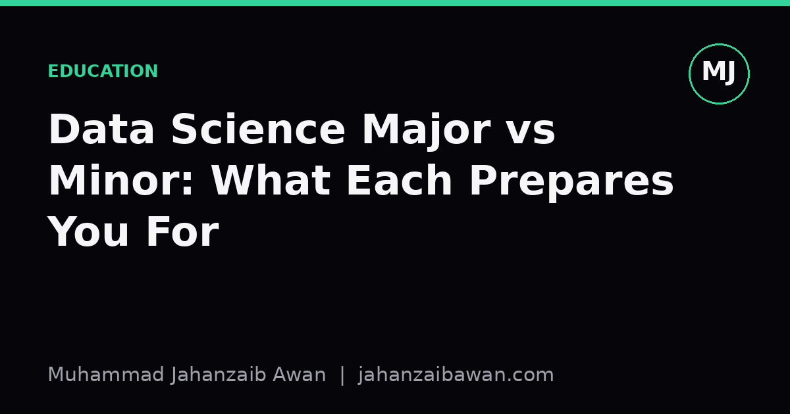

Data Science Major vs Minor: What Each Prepares You For
The difference is not about how much maths you cover; it is about whether you are trained to build methods or trained to use them well.

Why the label misleads people
I see a lot of prospective students treat 'data science major' and 'data science minor' as the same content at different volumes, as if the minor is simply the major with a few modules removed. That is not usually how it works, and treating them as equivalent leads to a mismatch between what someone expects a degree to have taught them and what it actually did. The honest difference is not depth of coverage so much as the kind of competence being built.
A major is typically structured to train you to design methods: to understand why a particular algorithm behaves the way it does, to derive or at least follow the mathematics behind it, and to know when a standard technique will quietly fail. A minor is usually structured to train you to use methods: to run an analysis, interpret the output sensibly, and communicate it to people who are not statisticians. Both are legitimate skills. They are just not interchangeable, and confusing them is where I think a lot of disappointment comes from, on both the student side and the employer side.
This matters practically because job descriptions rarely distinguish between the two. A posting for 'data scientist' might genuinely require someone who can diagnose why a model's calibration drifts after deployment, which leans on major-level training. Another posting with the same title might really want someone who can build a clean dashboard and run a sound A/B test, which a strong minor can prepare you for perfectly well. Knowing which bucket you were trained for, and which bucket a role expects, saves everyone time.
A concrete worked example: logistic regression
Take something as ordinary as logistic regression, since it shows the gap clearly without needing anything exotic. A minor-level treatment will teach you that logistic regression predicts a probability between 0 and 1, that you fit it with a library call, that you read off coefficients as rough indicators of direction and strength, and that you check accuracy or an ROC curve afterwards. That is enough to build a working churn model for a reasonably sized retail dataset and to explain its headline result in a meeting.
A major-level treatment goes further in ways that change what you notice. You would be expected to know that the coefficients are log-odds, not probabilities, so a coefficient of 0.8 does not mean an 80 percent increase in anything obvious; it means the odds multiply by roughly 2.23 for a one-unit change in that feature, holding others fixed. You would be expected to know why maximum likelihood estimation can fail to converge when classes are perfectly separable, why multicollinearity inflates standard errors without necessarily hurting predictive accuracy, and why accuracy itself is a poor metric when one class makes up 95 percent of your data of, say, 10,000 customers, only 500 of whom actually churned.
That last point is where the major-level training earns its keep. A model that predicts 'no churn' for everyone scores 95 percent accuracy on that dataset while being completely useless. Someone trained to design methods will reach for precision, recall, or a calibration curve almost automatically, and will ask whether the 500 churn cases were labelled consistently in the first place. Someone trained to apply methods, if well taught, will also know to check this; the difference is whether it was drilled in as a reflex through repeated exposure to the underlying statistics, or picked up as a checklist item. Reflexes survive unfamiliar situations better than checklists do.
Where each path genuinely shines
I do not think the major is simply 'better'. A minor attached to a strong home discipline, economics, biology, journalism, marketing, produces people who can ask better questions of data than a generalist major graduate often can, because they understand the domain the numbers are describing. A biologist with a data science minor who understands experimental confounds in a wet lab setting will often catch a flawed study design faster than a data science major with no biology background, simply because they know what a plausible result looks like in that field.
The major earns its value when the problem itself is unclear or the stakes of getting the method wrong are high: building a new model architecture, diagnosing why a production model's performance degraded after a silent change in the input distribution, or deciding whether a clever-looking result is actually leakage in disguise, such as a feature that accidentally encodes the label through a timestamp or an identifier that should never have been in the training set. These are not tasks with a standard recipe; they require someone comfortable enough with the underlying theory to reason from first principles when the textbook case does not apply.
In practice, the strongest teams I would want to build combine both. The minor-trained domain expert frames the question honestly and sanity-checks the output against real-world knowledge. The major-trained specialist builds the pipeline, chooses the evaluation protocol, and protects against the quiet failure modes that only show up under a leakage-aware split or a careful look at calibration. Neither role makes the other redundant.
The practical takeaway
If you are choosing between a major and a minor, do not ask which one 'covers more'. Ask which kind of competence you actually want: the ability to design and interrogate methods, or the ability to apply established methods well within a domain you care about. Look at the actual module list rather than the title, since a minor with a rigorous statistics core can outperform a thin major in practice, and the reverse is just as true.
And if you are hiring or being hired, say explicitly which kind of work the role involves. A role that needs someone to question whether a metric is measuring the right thing is a major-shaped role, whatever the job title says. A role that needs someone to deliver a clear, correct, well-communicated analysis on a known problem is a minor-shaped role. Matching the person to the shape of the problem, rather than to the label on their transcript, is the whole game.